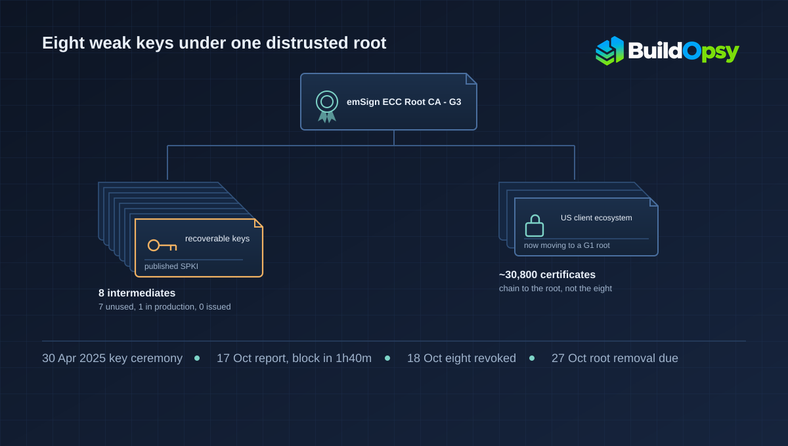

1. The Report and the 100-Minute Block
The first clock starts at 18:05 UTC on Saturday, 17 October 2026. That is when the Chrome Root Program says it received a report from a security researcher about eight eMudhra subordinate CA certificates whose private keys had been generated with insufficient randomness. Chrome corroborated the finding at 19:45 UTC and published a CRLSet update that blocks the Subject Public Key Info hashes of the affected intermediates. From report to block: 100 minutes.
Mozilla's clock starts at 20:06 UTC, 2 hours and 1 minute later, and ends at 22:59 UTC, when its OneCRL update had reached all Firefox users with standard configurations. That is 2 hours and 53 minutes from Mozilla's own receipt, and just under 5 hours from the first report. The two vendors were not racing on the same clock, but both had a working block in place before the weekend ended.
The mobile path was slower and is worth stating separately. Google says Android devices and Googlebooks received an equivalent update through Google Play Services around 22:00 UTC on Monday, 19 October. That is 51 hours and 55 minutes after the report reached Chrome, and it came with a restart option for users who did not want to wait for the rollout.
eMudhra's own action sits between those two speeds. The company says it was notified late on the evening of 17 October India time, that the researcher contacted Apple, Google, Microsoft and Mozilla at the same time, and that it revoked all eight intermediates on 18 October. In its 26 October note it puts the gap at 14 hours from confirming the issue, which is fast for a CA and still slower than the browser block, because a revocation has to be produced and published while a CRLSet entry is a list update.
2. What the Ceremony Was Supposed to Produce
A root certificate signs intermediates, and an intermediate signs the certificates a browser actually sees. That makes an intermediate's private key a signing capability with a narrow but real blast radius: whoever holds it can mint a certificate for any domain that clients will accept, as long as the chain reaches a trusted root and the certificate is logged where logging is enforced.
Key generation for a public CA normally happens inside a hardware security module during a scripted ceremony, with witnesses and an audit trail. The private key is not supposed to exist in the clear anywhere. A backup is made by wrapping the key under a separate key-encryption key, and the wrapped blob is what leaves the room. eMudhra says the ceremony used FIPS 140-2 Level 3 modules, and that the problem was one step in the procedure rather than the absence of hardware: "a key wrap/unwrap step produced a second, weak set of keys alongside the original strong keys. The weak keys were the ones published to the browser root stores."
That sentence is the whole failure in one line, and it is also where the public record stops. eMudhra says it has not confirmed the exact root cause and has committed to a full analysis through the CCADB process. The closest the company comes to naming a cause is its 26 October note, which calls the defect "a script error" — a category, not a mechanism. Google's description is narrower and consistent: "insufficient randomness (i.e., weak cryptographic entropy)." Neither source says the strong keys were compromised, and neither says anyone used the weak ones.
The practical consequence of a weak key is different from a stolen one. A stolen key is a copy; detection depends on someone noticing use. A weak key can be derived from the public half by anyone who knows the weakness, which means the published certificate is itself the evidence. The researcher reportedly reverse-engineered the keys with AI-assisted tooling, according to eMudhra's account. If that is accurate, the recovery did not require access to anything private.
Seven of the eight intermediates were never used in production, and the one that was had not issued a single certificate, according to eMudhra. Certificate Transparency records, which eMudhra cites, are consistent with that. So the keys were dangerous and unused, which is the best possible version of this failure and the reason the revocation itself cost customers nothing.
3. Two Kinds of Revocation, Two Blast Radii
The browser response had two stages, and they are not interchangeable. The first was a block by public key: Chrome's CRLSet refuses any certificate that carries one of the eight SPKIs, and Mozilla's OneCRL does the same for Firefox. This is fast, targeted, and reversible. It also requires no new certificate for anyone, because no legitimate certificate was signed by those keys.
The second stage was removing the root that signed them, emSign ECC Root CA - G3, from the Chrome Root Store. Google's post says the removal was expected to reach devices relying on the Chrome Root Store on the morning of Tuesday, 27 October PDT, and sooner on prerelease channels. Mozilla announced the equivalent change in NSS 3.131.1 to protect applications that use its trust store but do not receive OneCRL updates.
Removing a root is a different instrument. It does not target one key; it withdraws trust from every chain that ends at that root, including certificates issued by intermediates that were never part of the incident. Google says so plainly: "Some legitimate certificates chaining to this root will cease to function in Chrome as a result, and eMudhra has committed to working with impacted subscribers to migrate customers off of the impacted root."
That is the sentence to hold on to when reading the rest of the coverage. The eight weak keys were neutralised within 100 minutes in Chrome and within three hours of Mozilla's receipt, with no customer impact. The root removal, taken as a precaution because the failure was in the ceremony that produced the hierarchy, is the action that puts working certificates at risk. Both decisions are defensible. They are not the same decision, and the difference explains almost every number in this story.
4. What the 30,800 Certificates Were
On 28 October eMudhra published a transition update: "The roughly 30,800 certificates issued under the affected G3 hierarchies belong to a client ecosystem in the United States." The same update says that ecosystem already had an alternate issuance path through eMudhra's G1 RSA root and is now using it, and that eMudhra has asked browser and root-store programs for time so the migration does not disrupt member institutions.
Put that beside the earlier statement and the two only reconcile one way. If the eight intermediates issued zero end-entity certificates, then the 30,800 cannot descend from them. They have to chain to the same root through other G3 intermediates that were not in the compromised set. eMudhra has not published that mapping, so this is an inference from two statements it made separately, and it is the kind of inference a final root-cause report should settle.
The company also does not publish how many TLS certificates it has issued in total, so the 30,800 cannot be turned into a percentage. Anyone quoting a share of eMudhra's customer base is supplying a denominator the source does not provide.
Two smaller discrepancies belong in the record rather than in a footnote. Google's post says "no TLS certificates chaining to these six intermediate CAs were logged to Certificate Transparency" while eMudhra and Mozilla both describe eight. The difference may be that Google tracked six in its own analysis, or that two had no CT-relevant status. Neither statement says the other two issued certificates. And the root removal runs on two clocks. Google's post describes the root as removed from the Chrome Root Store, while the release to devices was still given as expected on the morning of 27 October; as of 30 October, the public record does not include a confirmation that the device rollout finished.
5. How a Trust Store Update Actually Reaches a Browser
It helps to separate four delivery paths, because the incident used all four and they failed and succeeded at different speeds.
CRLSet is Chrome's compressed revocation list, delivered as a component update. It works at the public-key level, so one entry covers every certificate sharing that key, and it does not need a browser restart. That is why Chrome could block eight intermediates in 100 minutes without shipping a browser build.
OneCRL is Mozilla's central revocation list, delivered through Remote Settings. Mozilla reports full coverage for standard configurations by 22:59 UTC and then shipped Firefox 158.0.1 for desktop and Android, with ESR 115.43.1 and ESR 153.5.1, for users whose settings blocked the list update. On 21 October it added Firefox for Android 158.0.2 because some clients were not applying the bundled blocklist immediately after startup. Delivery and application are different events, and this is the incident saying so out loud.
NSS is the trust store library Mozilla maintains. Applications that embed it and do not consume OneCRL get protection only when the root list changes, which is why the NSS 3.131.1 update removing the root matters beyond Firefox. Java trust stores, Python's certifi bundle, operating system stores and pinned clients are the same problem in different packaging: each has its own release cadence, and none of them is covered by a CRLSet push.
Certificate Transparency is the second net. Chrome enforces CT for publicly trusted certificates by default, and Google says no certificate chaining to the affected intermediates had been logged before the block, so forged certificates could not have been used against CT-enforcing clients. Google also says CT logs were updated to reject certificates chaining to the compromised CAs. That closes the obvious follow-on move, logging a fresh forgery, without needing every client to update first.
What is left is the population that neither enforces CT nor takes a block: offline machines, embedded devices with frozen stores, applications pinned to the old hierarchy, and anything whose operator never applied the pending update. For those clients the root removal is the backstop, and it is the slow, disruptive one. The fast path protected the many; the slow path is what the remainder will eventually feel.
6. Two Audit Cycles and an Undetected Key Defect
The eight intermediates were created on 30 April 2025. The report arrived on 17 October 2026, which is 17 months and 17 days, or about 535 days, by the calendar; eMudhra rounds it to "about 18 months." In that window the hierarchy was included in browser trust lists in mid-2025 and passed two independent audit cycles.
That is the most uncomfortable fact in the file, because it is not a story about a missing control. There were audits. They passed. The defect survived them. What the public record does not contain is what those audits examined, whether either one tested the strength of the published keys, or whether either audit report is available. Without that, the only defensible statement is the narrow one: two audit cycles did not detect a key-generation defect that an outside researcher found with the published certificates in hand.
The detection path matters here. It did not come from monitoring, from a customer report, or from an internal review. It came from someone outside the organisation testing the keys that the CA had published. Chrome's response included a check in the other direction: it reviewed its own root stores and confirmed that no other keys shared the same failure mode. That is the right reflex, and it is also a reminder that the defect class is generic rather than specific to one company.
There is a precedent that predates this incident by nine years. The ROCA flaw, tracked as CVE-2017-15361, was a key-generation weakness in an RSA library that made affected public keys easier to factor; the fix required identifying and replacing keys that had been considered valid for years. The lesson from both cases is the same. Key strength is a property of the published artifact, and it can be tested by anyone. Ceremony documentation describes what was supposed to happen, not what the key actually is.
7. What a Normal Team Should Take From This
Most readers do not run a certificate authority. The transferable parts are still specific, and each maps to something in this record.
- Test the artifact you publish, not the process you documented. The eight keys were recoverable from their public halves. A continuous check over every certificate and key you publish would have found this without an audit cycle. If your trust depends on a key you generated, verify its strength after generation, not only the ceremony around it.
- Keep the backup path weaker than the signing path, never the reverse. eMudhra's account says a wrap/unwrap step produced a second key set that became the published one. Whatever the final root cause, the shape is a backup or transfer mechanism that could influence what got published. If a recovery process can write to the production key material, it is part of the signing path whether or not the diagram says so.
- Use the narrow block first and treat root removal as a planned migration. Chrome's SPKI-level block stopped the eight keys in 100 minutes, and Mozilla's OneCRL coverage followed within three hours of its own receipt, with no customer impact. Root removal puts a working ecosystem at risk because it is designed to withdraw a trust anchor. Keep both tools, and be explicit about which one you are reaching for and who pays for it.
- Inventory the trust stores you actually depend on. The 30,800 certificates are not exposed because their keys were weak. They are exposed because a root is leaving a store their clients read. Java keystores, Python bundles, OS stores, NSS-derived applications and pinned clients each update on their own schedule. A migration plan that only covers browsers is incomplete.
- Arrange a second issuance path before you need one. eMudhra's remediation for enterprise customers is redundant CA issuance, and its own affected ecosystem is moving to a G1 root it already operated. Dual issuance is unglamorous and it is the difference between a migration and an outage.
- Verify that a pushed block was applied. Mozilla's Firefox for Android follow-up exists because some clients did not apply OneCRL at startup. Delivery telemetry is not the same as enforcement, and the gap shows up on mobile first.
8. The Verdict
As a disclosure, this is strong on speed and weaker on mechanism. eMudhra named the failure, said "the flaw was ours," published dated updates through the week, committed to a CCADB root-cause analysis, and appointed KPMG as an independent reviewer on 30 October. Chrome and Mozilla published precise UTC timestamps and described what their blocks do. For an incident that broke trust in a commercial CA, the record is unusually readable.
The gaps are specific. The root cause is still unconfirmed, so the one sentence about the wrap/unwrap step is a hypothesis with a source, not a finding. The "no certificates were issued" framing is accurate about the eight and misleading if read as "no certificates were affected," which is how a reader arrives at the 30,800. The audit question is unanswered: two cycles passed and the defect survived. The six-versus-eight CT sentence and the unconfirmed device rollout are loose ends that a final report should close.
What would change this assessment is a root-cause analysis that names the failed step, explains why the published key differed from the intended one, says what the audits covered, and maps the 30,800 certificates to the intermediates that issued them. Until then, the defensible conclusion is narrower than the headlines: eight recoverable keys were blocked before anyone used them, and a precautionary root removal is costing one customer ecosystem a migration it did not choose.
The same week produced two other incident files on this shelf, on the PHP2Shell patch window and the LiteLLM release-pipeline compromise. All three are about the distance between a known defect and a deployed fix. This one is the shortest distance of the three, and the only one where the remediation is the part that carries the cost.
Sources and Method
All times are UTC as printed by the sources. The 1h40m figure runs from Chrome's 18:05 report receipt on 17 October to the 19:45 CRLSet landing. The 2h53m figure runs from Mozilla's 20:06 receipt to its 22:59 completion. The 51h55m figure runs from the 18:05 report to the approximate 22:00 Play Services update on Monday, 19 October; Google gives that time as approximate. The 17-month, 17-day age of the keys runs from 30 April 2025 to 17 October 2026 and is Buildopsy arithmetic on the dates eMudhra published. The 30,800 figure is eMudhra's own count for the affected G3 hierarchies and is not converted into a share, because no total certificate count is published.
The claim that the 30,800 chain to the root rather than to the eight is inference from two eMudhra statements: the eight issued no end-entity certificates, and about 30,800 certificates sit under the affected G3 hierarchies. It is labelled as inference in the text. No claim is made about the exact entropy defect, about forgery or use of a weak key, about compromise of any root private key, or about the number of certificates that have actually stopped working. Buildopsy did not test any certificate, key, or client in this incident.
- Google Security Blog: Protecting Chrome and Android Users from Compromised eMudhra Intermediate CA Certificates (20 October 2026), for the 18:05 and 19:45 UTC timestamps, the SPKI block, the CT statement, and the planned root removal
- Mozilla Security Blog: Protecting Firefox users following the compromise of eMudhra intermediate certificates (20 October 2026, updated 21 October), for the 20:06 and 22:59 UTC timestamps, OneCRL, NSS 3.131.1, and the Firefox 158.0.2 follow-up
- eMudhra: Statement on Recent Certificate Security Incident (first published 20 October 2026, updated through 30 October), for the 30 April 2025 ceremony, the wrap/unwrap description, the 14-hour revocation, the 30,800 certificates, the G1 transition, and the KPMG appointment
- NIST NVD: CVE-2017-15361 (ROCA), referenced for the earlier weak-key-generation precedent
- Wikipedia: Black October (information security), used only to locate the primary sources above, not as a source of fact